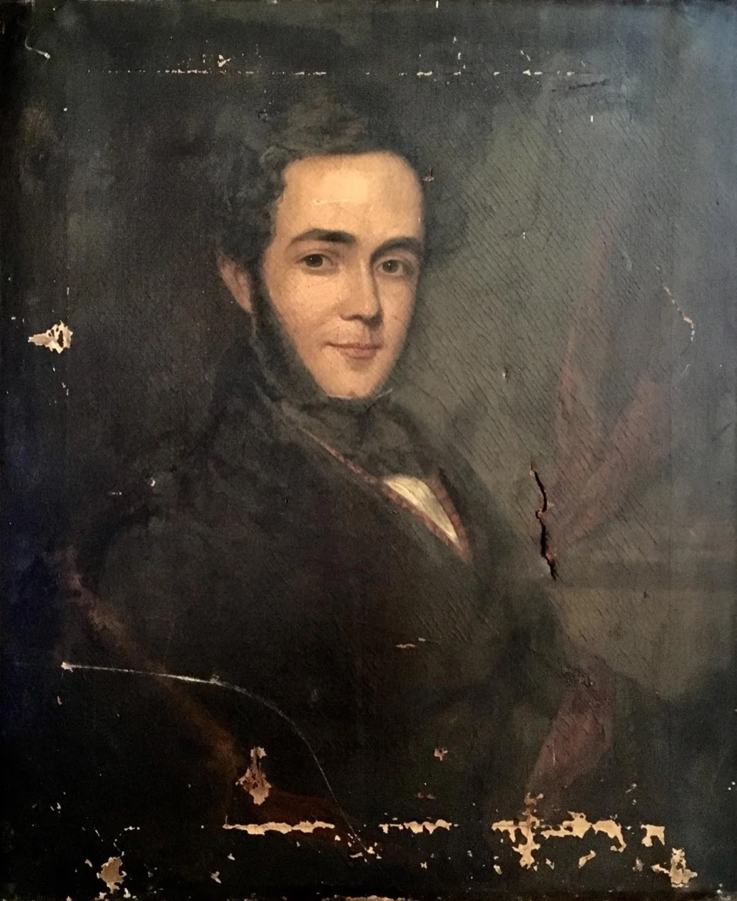
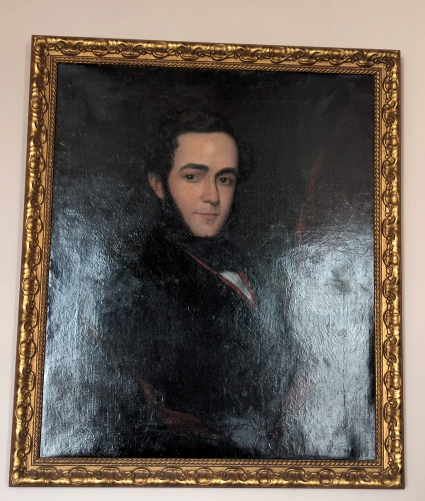
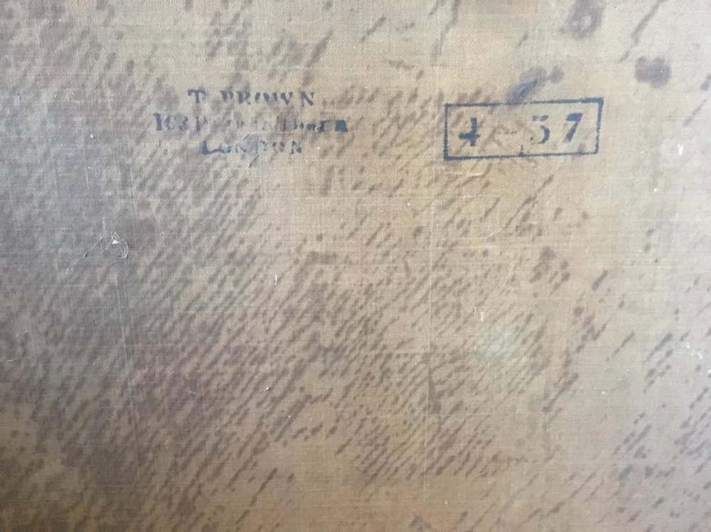
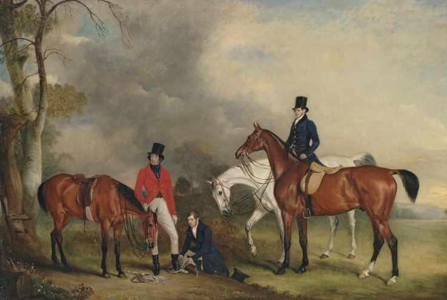
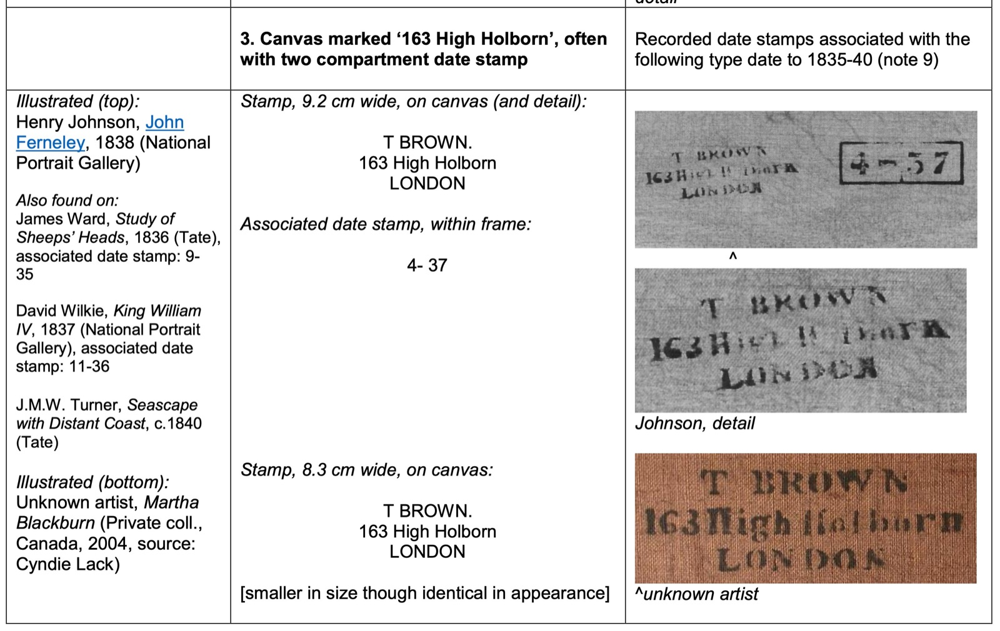

This handsome fellow is "The Ancestor", a beloved and mysterious family heirloom, currently hanging in pride of place in my living room.
We are very curious to find out more about the sitter (or the painter). I've included everything we know on this page – I'd be very grateful for any additions!


My uncle: "It was hung on the basement wall of [house in York], so it had entered the family after I was 7 (c. 1962). My dad bought it as a joke from one of the antique shops he used to like to poke around in. As he looked in these up and down the country I can't even say which part of the country it came from. The round hole that used to be in it came from a blunt bamboo spear I once threw at it, expecting the wood to bounce off not puncture what looked like tough old canvas.
My dad once took it along to an art expert who said there was no signature to be found. I'd guess it was a picture done by one of the provincial painters that used to turn out portraits of local worthies. Branwell Bronte was expected to become this type of painter but he was defeated by his own inefficiency and the rise of the photograph. For these reasons and, judging from the sideburns, I'd guess the picture comes from around 1830."
The stamp on the back of the painting indicates that the canvas was purchased from T Brown, 163 High Holborn, London. It looks like 4-37? i.e. April 1837.

Looking at other canvases sold by T Brown, something stands out: an identical mark from April 1837 (see table below). This mark is from a canvas used for an 1838 portrait of John Ferneley by Henry Johnson. Ferneley was an English painter who specialised in painting horses. I can find very little information about Henry Johnson online – the John Ferneley portrait is the only one of his portraits in the National Portrait Gallery.
The Ferneley portrait is remarkably similar to the Ancestor – both show kindly-looking men, with dark eyes and thick eyebrows, dressed simply and in front of vague dark backgrounds. I'm not sure to what extent that's a quirk of the artist, or a very standard form for early Victorian portraits.
Could Henry Johnson be the mystery painter we've been looking for?

